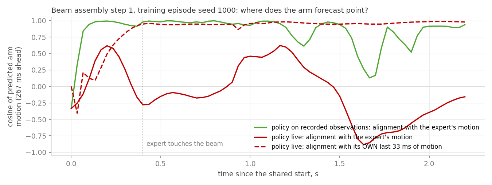

Week 3 ended with 0 of 80 closed-loop successes on fresh starts. This week asks where in the pipeline the failure
sits, by evaluating in domain: every rollout starts from the bit-identical initial state of one of the policy's own
training episodes, so generalisation is out of the picture and the recording is available as a frame-by-frame reference.
Only the source of the 16-row reference chunk changes between conditions; the controller, physics and success test are the same throughout.
Result 3In-domain closed-loop evaluation: a four-rung ladder
Four ways of producing the reference the controller tracks, from a pure replay to the real closed loop.
Each rung isolates one thing: whether the evaluation stack works, whether a measured-state reference is executable at all,
whether the policy forecasts well on the training distribution, and whether it can drive itself.
1 · Expert commands, exact replay. The recorded motor targets, held per frame, no force law. If this fails the infrastructure is broken.
2 · Perfect forecast. No network: the recording's own future measured states, smoothed forces and contacts are served as the chunk, i.e. exactly what the policy is trained to output, with zero error. The ceiling of this reference type plus the controller.
3 · Policy on recorded observations. The real checkpoint, but at every state it receives the recording's observation (image or cloud, joints, velocities, forces, contacts). Its forecasts are executed in the live simulator; it never sees the consequences. Teacher forcing.
4 · Policy live. The real closed loop, same start.
Experiment settings
Episodes
5 training episodes per task, evenly spaced through the checkpoints' train split (seeds 1000 to 1079). 4 tasks × 5 episodes × 7 conditions = 140 rollouts, one cold-start simulator process each; all 140 resets matched the recorded start bit for bit.
Policy
The Week 3 checkpoints, unchanged: point-cloud (shown in the videos) and RGB (tables). Rungs 1 and 2 use no network.
Rung 1
Recorded PD targets, hold interpolation, no velocity feedforward, null law: the exact replay.
Rungs 2 to 4
Week 3 loop: forecast every 2 states, linear interpolation at 120 Hz, velocity feedforward, task-space force law (kp 0.3, ki 10, clip 0.12 rad). Rung 2 was also run with the null law.
Rungs 2 and 3
Forecasts exist while the recording lasts; afterwards the last reference is held for 2 s so the environment can still reach a verdict.
Departure metrics
Rollout compared with the recording at the same frame: worst arm and hand joint error, part position error, first frame the part is more than 10 mm from its recorded position.
End
Success = all insertion sub-goals + retract. Otherwise 10 s no-progress timeout or the frame cap.
2Perfect measured-state forecast + force law no network, zero forecast error
3Policy on recorded observations point-cloud checkpoint, teacher forced
4Policy live point-cloud checkpoint, closed loop
Outcome, all 140 rollouts
reference source
tight insertion
beam step 1
beam step 2
screwing
all
closest keypoint, mm
force bias, N
1 · expert commands, exact replay
5/5
5/5
5/5
5/5
20/20
3
−0.3
2 · perfect forecast, null law
0/5
0/5
0/5
0/5
0/20
228
−8.7
2 · perfect forecast + force law
0/5
0/5
0/5
0/5
0/20
124
−6.7
3 · point-cloud policy, recorded observations
0/5
0/5
0/5
0/5
0/20
127
−5.2
3 · RGB policy, recorded observations
0/5
0/5
0/5
0/5
0/20
144
−4.6
4 · point-cloud policy, live
0/5
0/5
0/5
0/5
0/20
244
−0.9
4 · RGB policy, live
0/5
0/5
0/5
0/5
0/20
246
−0.5
Successes per task over 5 training episodes. Closest keypoint and force bias (measured minus target while engaged, worst fingertip) are means over the 20 episodes of the row. The live rows have a small bias only because the fingers rarely reach the part.
Departure from the recording
reference source
worst arm joint error, rad
worst hand joint error, rad
part leaves the recorded path (> 10 mm) at frame
hand forecast error at 267 ms, rad
1 · expert commands
0.000
0.000
never
–
2 · perfect forecast + force law
0.03
0.25 to 0.40
14 to 35
0 by construction
3 · policy, recorded observations
0.03 to 0.04
0.26 to 0.50
30 to 38
0.06 to 0.08 (no-motion baseline 0.12 to 0.18)
4 · policy, live
0.5 to 2.5
1.7 to 2.0
17 to 36
0.31 to 0.40 (worse than predicting no motion)
Ranges are across the four tasks, point-cloud and RGB pooled; frames at 60 Hz. Forecast error = mean |predicted − recorded| of the hand joints at the last row of the chunk, against the recording's own future; for the live rung this is only meaningful before the rollout leaves the recording.
Part position error against the recording, training episode seed 1000 of each task, the same episodes as the videos. The perfect forecast and the teacher-forced policy overlap and both lose the part at the grasp; the live policy is off the path before the hand ever reaches the part.
Rung 1: the evaluation stack is sound. Replaying the expert's commands through the same reset, controller, physics and verdict succeeds 20 of 20 and reproduces the recordings bit for bit. Nothing below is a plumbing error.
Rung 2: a measured-state reference is not executable on this hand, even when perfect. The recorded future joint angles track to 0.03 rad on the arm, yet every task drops the part at the grasp. Measured finger angles stop at the part surface and carry no squeeze: in contact the expert's commands lead the measured angles by 0.25 to 0.6 rad, the force law may add at most 0.12 rad, and it recovers only part of the preload (bias −8.7 N without it, −6.7 N with it). This is the same conclusion as the Weeks 1–2 state-only replay, now confirmed with the force law and the BC output format.
Rung 3: on its training distribution the policy is as good as the oracle. Fed the recording's observations, both checkpoints reproduce the rung-2 rollouts almost exactly (arm within 0.03 rad, same grasp failure at the same moment). Hand forecast error at 267 ms is 0.06 to 0.08 rad, 2.5× better than predicting no motion. In-domain accuracy is not the limit; the reference type is.
Rung 4: the policy cannot drive itself, even from a training start. With live inputs it leaves its own demonstration within 10 to 20 frames, before any contact, and its forecasts become worse than “no motion”. The mechanism is below.
Result 4Why the live rollouts drift: the forecast is mostly velocity extrapolation
Rungs 3 and 4 differ only in where the policy's inputs come from. Comparing them state by state on one episode shows how a small execution
error turns into a large forecast error, and an offline ablation shows which input carries it.
tight insertion, seed 1000, point-cloud policy
state 0
state 2
state 4
state 8
state 12
state 16
joint position input, live minus recorded, rad
0.000
0.026
0.104
0.168
0.482
0.809
joint velocity input, live minus recorded, rad/s
0.00
1.07
1.72
4.23
4.70
4.67
forecast, live minus recorded, rad
0.000
0.200
0.545
0.830
0.961
1.019
Worst joint at each state. At state 0 the two rungs receive identical inputs and produce identical forecasts (2×10−7 rad), which also verifies the live input path. Two frames later the controller has executed the first rows with a 0.026 rad error, the velocity input differs by 1 rad/s, and the 267 ms forecast has moved by 0.20 rad: about 1 rad/s × 0.27 s.

Beam assembly step 1, seed 1000: the expert first lifts the hand away from the beam, then turns around and descends to it. Teacher forced (green), the policy predicts that turn-around. Live (red), its forecast never aligns with the expert's motion again after 0.2 s; instead it aligns with the policy's own last 33 ms of motion (dashed), reaching 0.95 by 0.4 s. The hand keeps moving in its initial direction and ends 19 cm from where the expert grasps.
Which input carries it: offline ablation on training episodes
policy
task
arm, as trained
arm, velocity inputs zeroed
hand, as trained
hand, velocity inputs zeroed
Point cloud
tight insertion
0.93
0.10
0.81
0.19
beam step 1
0.91
0.15
0.85
0.28
beam step 2
0.88
0.13
0.79
0.26
screwing
0.83
0.15
0.75
0.19
RGB
tight insertion
0.90
0.26
0.72
0.29
beam step 1
0.88
0.23
0.77
0.32
beam step 2
0.90
0.31
0.71
0.34
screwing
0.82
0.19
0.67
0.22
Motion gain = slope of the predicted joint displacement on the recorded one, forecast row 1 (33 ms, the rows the controller executes); 1.0 = the right amount of motion. Two training episodes per task, recorded observations. “Velocity inputs zeroed” sets the joint-velocity and 33 ms joint-history inputs to zero and leaves the visual input, joint positions, forces, contacts and task ID untouched.
What the policy learned. Three quarters or more of its near-term motion prediction is a copy of the velocity it is given; the scene, the joint configuration and the contacts account for the rest. That works under teacher forcing, where the recording's velocity is the input. Closed loop, the input velocity is the one the policy just produced: with a gain below 1 the motion decays, with a small execution error the direction locks in, and a manoeuvre that requires contradicting the current velocity, such as the turn-around above or closing the fingers from rest, is never predicted. Rung 4 fails on training episodes for this reason, not for lack of data coverage.
Two changes before the next evaluation. (1) Train the joint head on the expert's commands (joint_target, already in the dataset) instead of measured angles, so the reference carries the grasp preload that rung 2 shows is missing; the force law then acts as a corrector, the role in which it was neutral to helpful in Weeks 1–2. (2) Remove the joint-velocity and history inputs, or corrupt them heavily during training, so the speed and direction of motion have to come from the observation. Rung 3 on training episodes is the acceptance test for a new checkpoint; rung 4 on the same episodes must then be passed before a fresh-seed evaluation says anything about generalisation.
Week 3
Sep 14 – Sep 20, 2026
Two results this week, both from the behaviour-cloning (BC) policy trained on the play2perfect
assembly demonstrations. Result 1 measures how well the policy predicts fingertip contact and force
offline, on held-out recordings. Result 2 runs the same policy closed loop in the simulator
through the hybrid force controller, once tracking the predicted states only and once adding the
predicted force targets through the force law.
The policy under test
A feed-forward behaviour-cloning network, one model for all four tasks. From one camera observation, the measured
robot state and a task ID it predicts a chunk of 16 future measured states: joint positions, fingertip force vectors and
contacts. It outputs references for the controller, not motor commands; it was never trained on expert actions.
Diagram from the checkpoint report, verified against the exported weights. Left: the two alternative visual encoders, one per checkpoint. Bottom: the 16-row forecast the controller consumes.
Result 1Offline force and contact prediction
Given a recorded observation, the policy forecasts the next 267 ms: where every joint will be,
which fingertips will be in contact, where on the fingertip, and with what force vector. The overlay video
draws the forecast on the recorded camera frame it refers to, red
for predicted contact and force, green for the recorded truth.
The plot beside it shows the same episode as time series.
Experiment settings
Policy
Point-cloud BC checkpoint, seed 0, epoch 27 of 40, 3.7 M parameters. One network for all four tasks. RGB counterpart: ResNet18 encoder, 14.9 M parameters.
Visual input
4,096 XYZ points from one fixed camera at 30 Hz, no colour, no augmentation. RGB model: one 640×480 image.
State input, 60 Hz
29 joint positions (7 arm + 22 hand) · joint velocities and 5 fingertip force vectors, causal EMA · contact flags and locations, 5 fingertips × 3 objects · 33 ms motion and force history · task ID.
Output per call
16 future states at 60 Hz = 267 ms, all in one forward pass: joint positions [16×29], force vectors [16×5×3], contact probability and location per fingertip–object pair. No autoregression.
2 steps vs 16 steps
Rows 2 and 16 of the same forecast, each drawn on the frame it refers to. Not a training difference. Video shows row 2 (33 ms, the first camera frame); plot shows row 1 (17 ms).
Labels
Raw joint positions, raw contacts. Force vectors smoothed with centered Savitzky–Golay(7,2), offline only.
Data
200 play2perfect expert demos, 50 per task → 40 train / 5 validation / 5 test per task. Retrospective split: test episodes were training data for an earlier model version.
Teacher forced on the 20 test episodes, 3,778 states: every input recorded, nothing executed. Hold = repeat the current state. Overlay: first test episode per task, contact offsets anchored to the recorded fingertips.
Metrics
MAE of arm and hand joints, rad · force per XYZ component, N · contact F1 at threshold 0.5 · contact location on true contacts, mm. Pooled over the 16 steps, tasks weighted equally.
Overlay on the recorded test episode. Top row: full camera view; bottom row: zoom. Left: forecast 2 steps (33 ms) ahead; right: 16 steps (267 ms) ahead. Arrows are force vectors, markers are contact points.Same episode as time series: two arm and two hand joints, fingertip force magnitudes, and contact probability per fingertip–object pair. Black or thick = recorded; thin solid = 1 step ahead; dashed = 16 steps ahead. Click to open full size.
Result 2Closed-loop rollouts: state tracking with and without the force law
The same point-cloud policy drives the robot in the simulator through the hybrid controller. Two variants start from the
bit-identical initial state: A tracks only the predicted joint states, B also tracks the predicted fingertip force targets
through the task-space force law. One episode per task is shown; the summary below covers the full evaluation grid.
Experiment settings
Policy
Same point-cloud checkpoint as Result 1. Live inputs only; nothing recorded is fed back.
Simulator
play2perfect Isaac Lab tasks, KUKA iiwa14 + Sharpa hand, no domain randomisation. 120 Hz physics, 60 Hz state, 30 Hz camera.
Start
Environment reset with seed 20002, never in the dataset (collection used 1000 to 1080). A and B restored to the same cached state, bit for bit.
Loop
Forecast every 2 states (30 Hz) · execute rows 1 to 2 (33 ms), then re-plan · linear interpolation at 120 Hz · velocity feedforward · targets clamped to joint limits · no smoothing, no ensembling.
A, state only
Null law: predicted joint states straight to the PD. Force targets logged, unused.
B, state + force
Task-space law at 120 Hz: joint offset toward the predicted force target from the measured tactile force (kp 0.3, ki 10, 20° cone, clip 0.12 rad) + contact-point term.
End
Success = all insertion sub-goals + retract. Otherwise 10 s no-progress timeout, 601 frames.
Video
Camera left. Right: per fingertip, predicted target dashed vs measured solid, time cursor, live error, object height.
Shown
Seed 20002 for tight insertion, beam assembly step 1, screwing: the seed where both variants touch the part. Beam step 2 in the table only.
AState tracking only null law: predicted joint states to the PD
BState + force tracking task-space law: force targets tracked from the tactile pads
Outcome
shown episode, seed 20002
variant
result
closest keypoint, mm
peak force on part, N
force-tracking bias, N
Tight insertion
A, state only
timeout, 0/2 goals
163
5.4
−0.67
B, state + force
timeout, 0/2 goals
163
5.3
−0.63
Beam assembly, step 1
A, state only
timeout, 0/2 goals
236
7.9
−0.74
B, state + force
timeout, 0/2 goals
236
10.4
−1.23
Screwing
A, state only
timeout, 0/10 goals
194
5.2
−0.44
B, state + force
timeout, 0/10 goals
234
26.5
−0.58
Closest keypoint = the smallest distance any part keypoint reached to its goal pose during the episode. Force-tracking bias = mean of measured minus target force while a fingertip is engaged, worst fingertip.
full grid
episodes
successes
sub-goals reached
ended by
closest keypoint, cm
part touched above 2 N
4 tasks × 5 seeds × {RGB, point cloud} × {A, B}
80
0
0
timeout, 80 of 80
15 to 37
41 of 80
Seeds 20000 to 20004, identical initial states across the four conditions of each seed. With five episodes per cell, the 95 % interval on a 0/5 still reaches 43 %, so the grid cannot rank the conditions; it only shows that none of them works yet.
What the rollouts show. The part is never grasped. Within the first second the object height drops by 8 to 10 cm in every episode: the hand does not
close fast enough, the part slips out, and the rest of the episode is spent near the table. Fingers do touch the part in half the episodes, and with the
force law on the fingertips press harder on it (screwing above: 27 N against 5 N), but never hold it.
Where the error is. The controller follows the policy's reference closely: 6 mrad mean hand error, under 1 mrad on the arm, and the force law
tracks its targets to within 1 N. The reference itself is wrong. From rest the policy under-predicts how fast the hand should close, and once forecasts
build on the policy's own states the arm reference drifts 0.18 rad from the recording within 0.65 s. This is closed-loop covariate shift of the BC policy.
The offline under-prediction of firm grasps in Result 1 points the same way: the force targets the law is asked to track are themselves too small.
Checks that passed. Replaying the recorded commands through the same live pipeline completes the tasks, and the live policy inputs match the
dataset files bit for bit, so the wiring is not the cause. The velocity feedforward halves the arm tracking error but does not change the outcome.
Weeks 1–2
Aug 31 – Sep 13, 2026
Two weeks of work on the force controller, ending in an evaluation on the play2perfect
assembly tasks. Twelve recorded episodes, three per task, each replayed open loop three ways on the same clock.
Every video below stacks the three settings in one column, frame for frame, so the camera view and the
per-fingertip force curves (target dashed, measured solid, red cursor = current time) can be compared at the
same instant. The target pose is drawn as a faint translucent copy of the part, so it can be told apart from
the real part even when the two coincide.
A · Original action replay: sanity check. The recorded motor commands replayed exactly; reproduces the recording.
B · State-only replay: no force tracking. The recorded reached joint states replayed through the position layer alone.
C · State replay + force tracking. Reached states served; the task-space force law supplies the grasp preload.